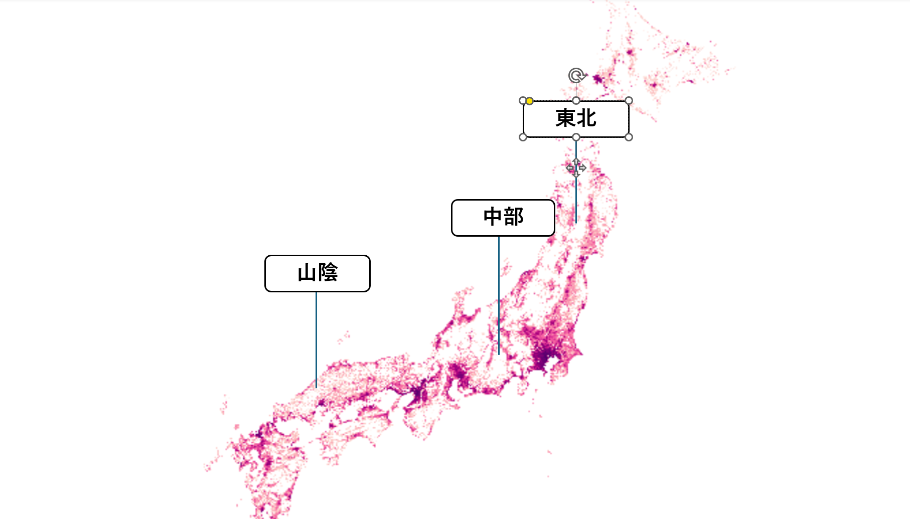
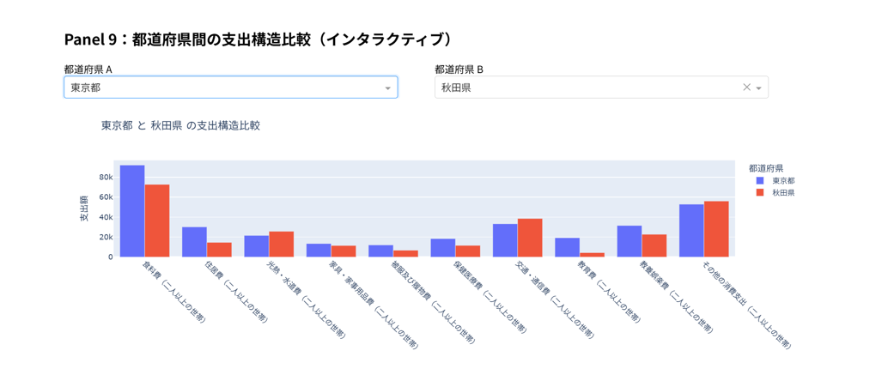

パネル一覧（概要）
Panel 5：Density drives spending structure
人口密度と住居費・教育費・交通費の関係をプロットし、「密度が生活装備と支出を動かす」という仮説を検証。
このパネルを見る →Panel 1：Japan Population Landscape 2020 日本の人口地形
日本は「人口山脈」を持つ国であり、その高さが「どこで都市的な生活装備が必要になるか」を示している。
Panel 2：Urban Peaks（都市の山脈） 東京・大阪・名古屋

Panel 3：Rural Plains（地方の平野） 東北・四国・山陰など

Panel 4：人はどこで、何にお金を使うのか？ 支出カテゴリの導入
Panel 5：人口密度が支出構造をどう変えるか Density drives spending structure
Panel 6：都道府県間の支出構造比較（Tokyo vs Akita）
